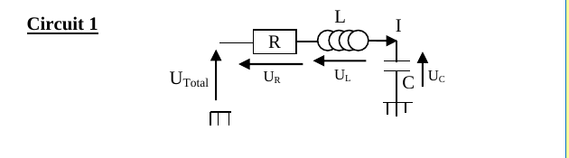
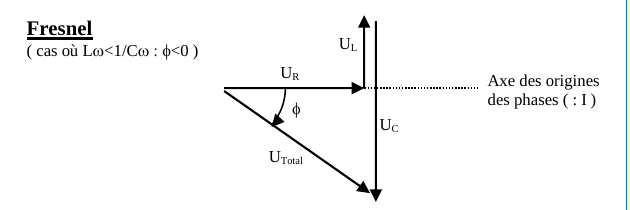
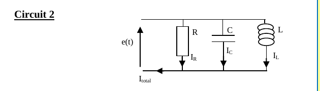
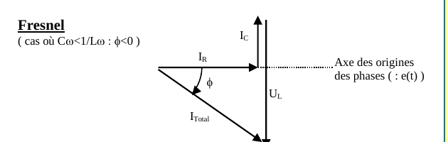

Électricité 4 — Régime sinusoïdal
1. Impédance complexe
Définition 1
En représentation complexe, on associe à chaque dipôle une impédance complexe $\underline Z$ :
$$\underline{Z_R} = R \qquad \underline{Z_L} = jL\omega \qquad \underline{Z_C} = \frac{1}{jC\omega}$$
2. Correspondance temporel — complexe
Théorème 1
$$u(t) = U\cos(\omega t+\varphi) \ \Longleftrightarrow\ \underline{u}(t) = Ue^{j(\omega t+\varphi)} = \underline U e^{j\omega t}, \qquad \underline U = Ue^{j\varphi}$$
| Domaine temporel | Domaine complexe |
|---|---|
| $\dfrac{du(t)}{dt}$ | $j\omega\,\underline u(t)$ |
| $\dfrac{d^2u(t)}{dt^2}$ | $-\omega^2\,\underline u(t)$ |
| $\displaystyle\int u(t)\,dt$ | $\dfrac{\underline u(t)}{j\omega}$ |
| $u(t) = \text{cte}$ (continu) | $\omega=0$ |
3. Diagramme de Fresnel
Rappels
La partie réelle « $a$ » du nombre complexe $z=a+jb$ est la projection de $z$ sur l'axe des réels. Le nombre complexe $z$ est représenté par un vecteur dans le plan complexe : $A\cos(\omega t)$ est la partie réelle (projection) de $Ae^{j\omega t}$.
Tracer le diagramme de Fresnel associé à $A_1\cos(\omega t+\varphi_1)+A_2\cos(\omega t+\varphi_2)+A_3\cos(\omega t+\varphi_3)=0$ consiste à tracer, dans le plan complexe, la somme vectorielle des vecteurs associés : $$A_1 e^{j(\omega t+\varphi_1)} + A_2 e^{j(\omega t+\varphi_2)} + A_3 e^{j(\omega t+\varphi_3)} = \vec 0$$
Tracer le diagramme de Fresnel associé à $A_1\cos(\omega t+\varphi_1)+A_2\cos(\omega t+\varphi_2)+A_3\cos(\omega t+\varphi_3)=0$ consiste à tracer, dans le plan complexe, la somme vectorielle des vecteurs associés : $$A_1 e^{j(\omega t+\varphi_1)} + A_2 e^{j(\omega t+\varphi_2)} + A_3 e^{j(\omega t+\varphi_3)} = \vec 0$$
4. Deux exemples de diagramme de Fresnel
Circuit 1 — RLC série (loi des mailles)

Théorème 2
$$\underline{U}_{Total} = \underline{U}_R+\underline{U}_L+\underline{U}_C = R\underline I + jL\omega \underline I + \frac{1}{jC\omega}\underline I = \underline Z_{Total}\,\underline I, \qquad \underline Z_{Total} = R+j\left(L\omega-\frac{1}{C\omega}\right)$$
En choisissant $I(t)=I_{max}\cos(\omega t)$ (origine des phases sur $I$) et $U_{Total}(t)=U_{max}\cos(\omega t+\phi)$, $\phi$ est le déphasage de la tension totale par rapport à l'intensité.

Circuit 2 — RLC parallèle (loi des nœuds)

Théorème 3
$$\underline I_{Total} = \underline I_R+\underline I_L+\underline I_C = \frac{\underline e}{R}+\frac{\underline e}{jL\omega}+\underline e\,jC\omega = \frac{\underline e}{\underline Z_{Total}}, \qquad \frac{1}{\underline Z_{Total}} = \frac1R+\frac{1}{jL\omega}+jC\omega$$
En choisissant $e(t)=U_{max}\cos(\omega t)$ (origine des phases) et $I_{Total}(t)=I_{max}\cos(\omega t+\phi)$, $\phi$ est ici le déphasage de l'intensité totale par rapport à la tension $e(t)$.

Remarque
Cas $C\omega<1/(L\omega)$ (branche inductive dominante) $\Rightarrow \phi<0$ : le courant total est en retard sur la tension $e(t)$, symétrique du cas du circuit 1.
Quiz de fin de chapitre
1. Pourquoi l'impédance d'un condensateur $Z_C=1/(jC\omega)$ diminue-t-elle quand la fréquence augmente ?
Réponse
Parce que $|Z_C|=1/(C\omega)$ (Définition 1) : à haute fréquence, le condensateur se charge et se décharge trop vite pour accumuler une tension importante à courant donné, il oppose donc de moins en moins de résistance au passage du courant alternatif — comportement caractéristique d'un condensateur (« passe-haut » en courant).
Parce que $|Z_C|=1/(C\omega)$ (Définition 1) : à haute fréquence, le condensateur se charge et se décharge trop vite pour accumuler une tension importante à courant donné, il oppose donc de moins en moins de résistance au passage du courant alternatif — comportement caractéristique d'un condensateur (« passe-haut » en courant).
2. Que devient l'impédance d'une bobine en régime continu ($\omega=0$) ?
Réponse
$Z_L=jL\omega=0$ (Définition 1, avec $\omega=0$) : en régime continu établi, la bobine se comporte comme un simple fil (impédance nulle), cohérent avec le fait que $u=Ldi/dt=0$ si $i$ est constant.
$Z_L=jL\omega=0$ (Définition 1, avec $\omega=0$) : en régime continu établi, la bobine se comporte comme un simple fil (impédance nulle), cohérent avec le fait que $u=Ldi/dt=0$ si $i$ est constant.
3. Un RLC série a $R=50\,\Omega$, $L\omega=80\,\Omega$, $1/(C\omega)=30\,\Omega$. Calculer le module et l'argument de $Z_{Total}$.
Réponse
$Z_{Total}=50+j(80-30)=50+50j$. $|Z_{Total}|=\sqrt{50^2+50^2}=50\sqrt2\approx70{,}7\,\Omega$. $\text{arg}(Z_{Total})=\arctan(50/50)=\pi/4=45°$ (Théorème 2).
$Z_{Total}=50+j(80-30)=50+50j$. $|Z_{Total}|=\sqrt{50^2+50^2}=50\sqrt2\approx70{,}7\,\Omega$. $\text{arg}(Z_{Total})=\arctan(50/50)=\pi/4=45°$ (Théorème 2).
4. Pour le même circuit qu'à la question 3, la tension totale est-elle en avance ou en retard sur le courant ?
Réponse
Puisque $L\omega>1/(C\omega)$ (80>30), la partie imaginaire de $Z_{Total}$ est positive, $\phi=+45°>0$ : la tension totale est en avance sur le courant (circuit à dominante inductive) — cas opposé à celui illustré en Fig. 2.
Puisque $L\omega>1/(C\omega)$ (80>30), la partie imaginaire de $Z_{Total}$ est positive, $\phi=+45°>0$ : la tension totale est en avance sur le courant (circuit à dominante inductive) — cas opposé à celui illustré en Fig. 2.
5. Pourquoi choisit-on l'intensité comme origine des phases pour un circuit série (Fig. 1-2), mais la tension pour un circuit parallèle (Fig. 3) ?
Réponse
On choisit comme référence la grandeur commune à tous les dipôles du montage : en série, c'est le courant (même intensité dans toute la maille) ; en parallèle, c'est la tension (même tension aux bornes de chaque branche). Ce choix simplifie l'écriture car il évite d'introduire un déphasage supplémentaire sur la grandeur de référence elle-même.
On choisit comme référence la grandeur commune à tous les dipôles du montage : en série, c'est le courant (même intensité dans toute la maille) ; en parallèle, c'est la tension (même tension aux bornes de chaque branche). Ce choix simplifie l'écriture car il évite d'introduire un déphasage supplémentaire sur la grandeur de référence elle-même.
6. Que se passerait-il sur le diagramme de Fresnel du circuit 1 (Fig. 2) si $L\omega=1/(C\omega)$ exactement ?
Réponse
$U_L$ et $U_C$ seraient de même norme et de sens opposés (Théorème 2, partie imaginaire nulle) : ils s'annuleraient exactement dans le diagramme de Fresnel, laissant $U_{Total}=U_R$, colinéaire à $I$ — c'est la condition de résonance en intensité du circuit RLC série ($\phi=0$).
$U_L$ et $U_C$ seraient de même norme et de sens opposés (Théorème 2, partie imaginaire nulle) : ils s'annuleraient exactement dans le diagramme de Fresnel, laissant $U_{Total}=U_R$, colinéaire à $I$ — c'est la condition de résonance en intensité du circuit RLC série ($\phi=0$).
7. Piège classique : peut-on additionner directement les impédances $Z_C=1/(jC\omega)$ et $Z_L=jL\omega$ comme deux nombres réels ordinaires ?
Réponse
On peut les additionner, mais il faut respecter l'algèbre des nombres complexes : $Z_L+Z_C = jL\omega+\dfrac{1}{jC\omega}=jL\omega-\dfrac{j}{C\omega}=j\left(L\omega-\dfrac{1}{C\omega}\right)$ (Théorème 2) — le piège est d'oublier que $1/j=-j$, ce qui inverserait le signe de la contribution capacitive si on l'omettait.
On peut les additionner, mais il faut respecter l'algèbre des nombres complexes : $Z_L+Z_C = jL\omega+\dfrac{1}{jC\omega}=jL\omega-\dfrac{j}{C\omega}=j\left(L\omega-\dfrac{1}{C\omega}\right)$ (Théorème 2) — le piège est d'oublier que $1/j=-j$, ce qui inverserait le signe de la contribution capacitive si on l'omettait.
8. Piège classique : dans la correspondance temporel-complexe (Théorème 1), pourquoi $d^2u/dt^2$ correspond-il à $-\omega^2\underline u$ et non à $+\omega^2\underline u$ ?
Réponse
Parce que dériver deux fois revient à multiplier deux fois par $j\omega$ : $(j\omega)^2=j^2\omega^2=-\omega^2$ (puisque $j^2=-1$). Oublier ce carré de $j$ (et donc le signe moins) est une erreur très fréquente lors du passage en notation complexe pour les équations du second ordre.
Parce que dériver deux fois revient à multiplier deux fois par $j\omega$ : $(j\omega)^2=j^2\omega^2=-\omega^2$ (puisque $j^2=-1$). Oublier ce carré de $j$ (et donc le signe moins) est une erreur très fréquente lors du passage en notation complexe pour les équations du second ordre.
9. Synthèse : reliez la notion de portrait de phase (chapitres précédents, régime transitoire) et celle de diagramme de Fresnel (ce chapitre, régime sinusoïdal forcé) — que représentent-ils tous les deux géométriquement ?
Réponse
Les deux sont des représentations géométriques d'une évolution temporelle sans tracer explicitement le temps : le portrait de phase relie une grandeur à sa dérivée (utile en régime transitoire, où l'évolution n'est pas sinusoïdale), tandis que le diagramme de Fresnel représente chaque grandeur sinusoïdale par un vecteur tournant à la pulsation commune $\omega$, dont on ne trace que l'amplitude et la phase relative (utile en régime sinusoïdal forcé établi, où toutes les grandeurs oscillent à la même fréquence).
Les deux sont des représentations géométriques d'une évolution temporelle sans tracer explicitement le temps : le portrait de phase relie une grandeur à sa dérivée (utile en régime transitoire, où l'évolution n'est pas sinusoïdale), tandis que le diagramme de Fresnel représente chaque grandeur sinusoïdale par un vecteur tournant à la pulsation commune $\omega$, dont on ne trace que l'amplitude et la phase relative (utile en régime sinusoïdal forcé établi, où toutes les grandeurs oscillent à la même fréquence).
10. Synthèse : à partir de $Z_{Total}=R+j(L\omega-1/(C\omega))$ (circuit 1) et $1/Z_{Total}=1/R+1/(jL\omega)+jC\omega$ (circuit 2), montrez que les rôles de $L$ et $C$ s'échangent entre le circuit série et le circuit parallèle.
Réponse
En série, l'impédance de $L$ ($jL\omega$) s'additionne directement, tandis que celle de $C$ contribue par son inverse ($1/(jC\omega)$) : $C$ devient donc « dominant à basse fréquence » (grande impédance) et $L$ « dominant à haute fréquence ». En parallèle, c'est l'admittance ($1/Z$) qui s'additionne : celle de $L$ ($1/(jL\omega)$) est alors défavorisée à haute fréquence, celle de $C$ ($jC\omega$) à basse fréquence — exactement l'inverse du cas série. Cette dualité série/parallèle, réel/imaginaire est au cœur de la théorie des filtres (chapitre suivant).
En série, l'impédance de $L$ ($jL\omega$) s'additionne directement, tandis que celle de $C$ contribue par son inverse ($1/(jC\omega)$) : $C$ devient donc « dominant à basse fréquence » (grande impédance) et $L$ « dominant à haute fréquence ». En parallèle, c'est l'admittance ($1/Z$) qui s'additionne : celle de $L$ ($1/(jL\omega)$) est alors défavorisée à haute fréquence, celle de $C$ ($jC\omega$) à basse fréquence — exactement l'inverse du cas série. Cette dualité série/parallèle, réel/imaginaire est au cœur de la théorie des filtres (chapitre suivant).
Sources
- Document source : « Régime sinusoïdal » (résumé de cours, Prépa Barthou, Pau)
- Programme officiel de Physique-Chimie, CPGE 1re année (filière PCSI), bloc « Circuits linéaires en régime sinusoïdal forcé » : enseignementsup-recherche.gouv.fr
- H-Prépa Physique 1re année (Hachette Éducation) — chapitre « Représentation complexe, impédances »